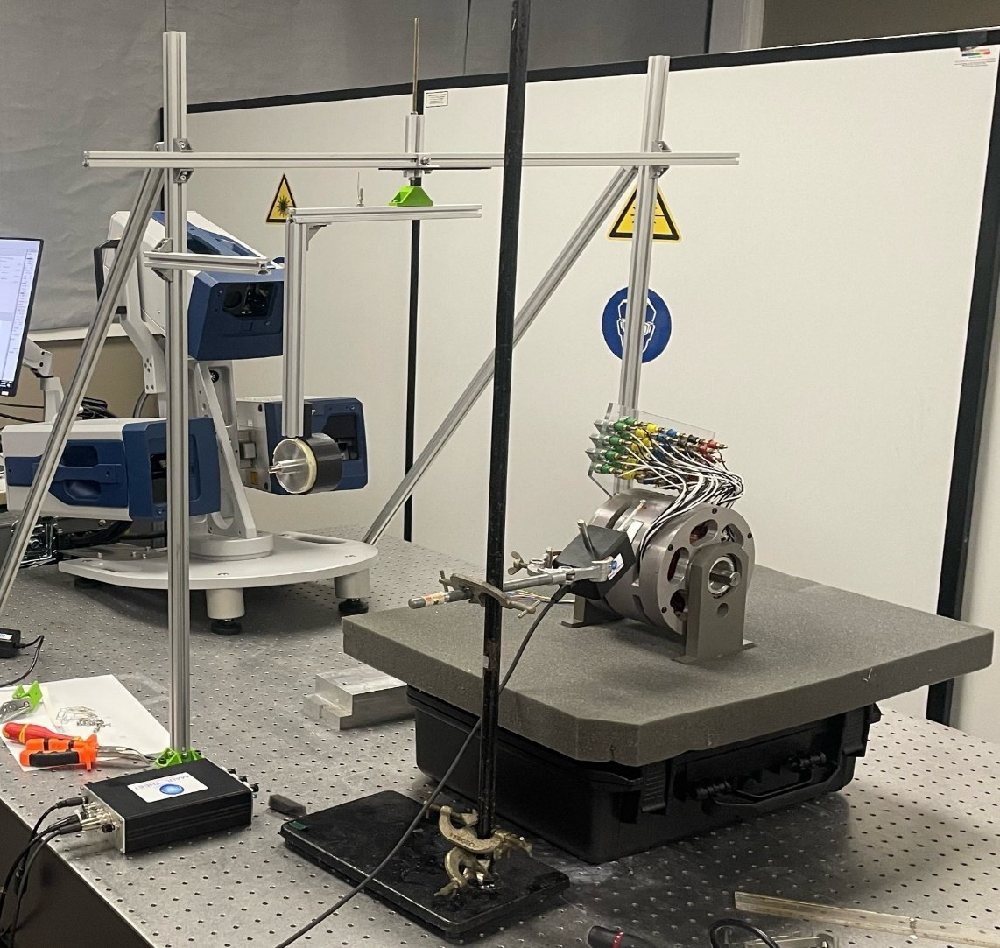
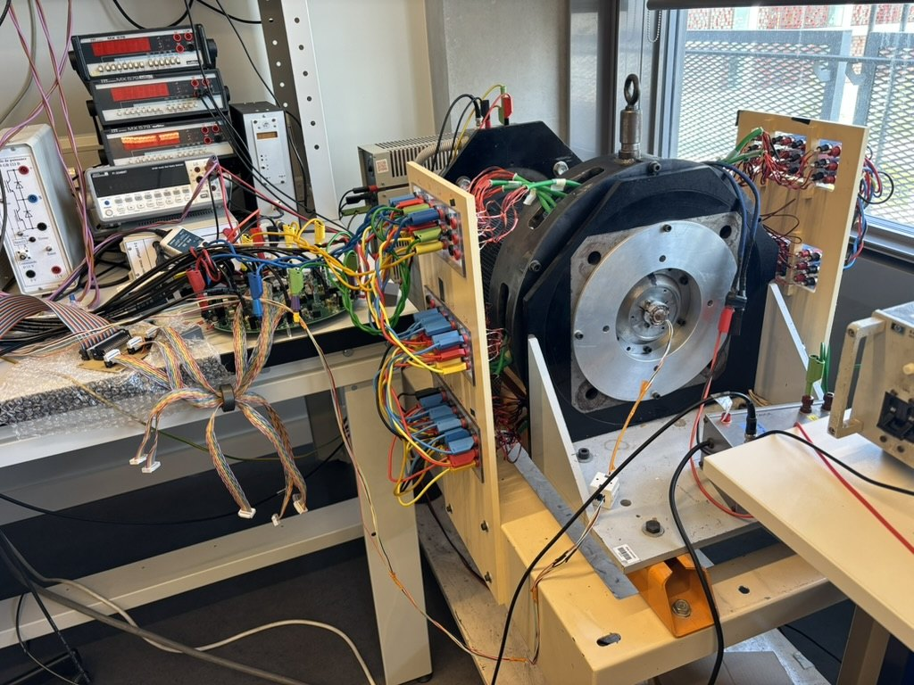

Equipe SATIE · Transducteurs et Systemes d Energie
Un site TeSE plus visuel, plus incarne et pret pour GitHub Pages.
La nouvelle version met en avant les activites scientifiques, les moyens experimentaux et les membres de l equipe avec des cartes illustrees, des fiches personnelles et une navigation bilingue FR / EN.




12membres permanents
16doctorants en 2026
2langues FR / EN